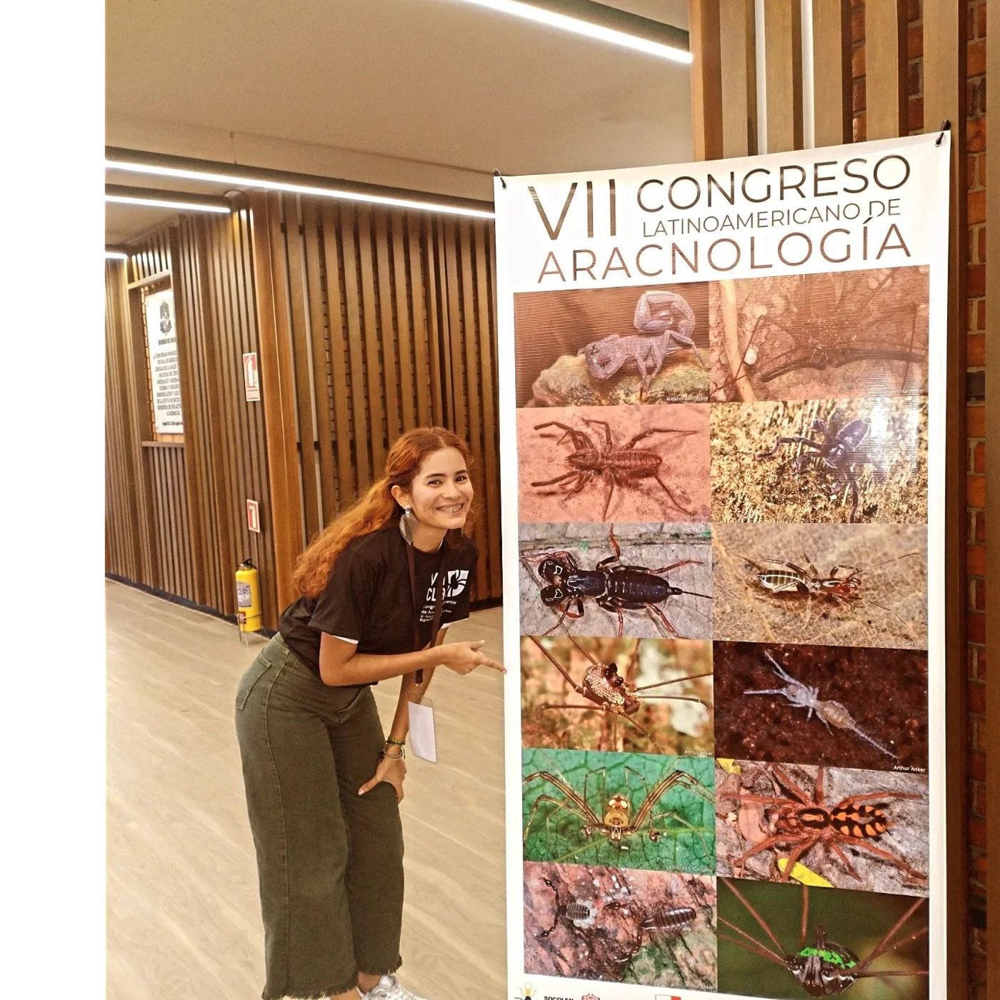
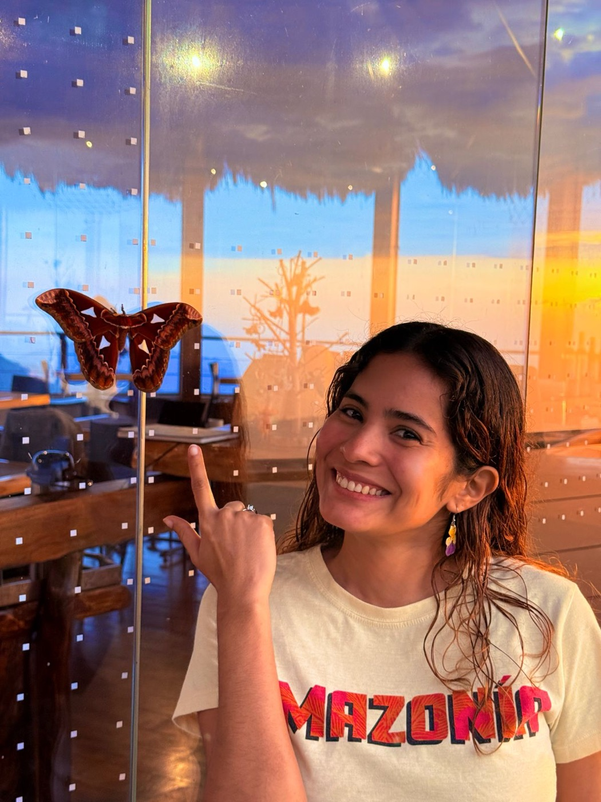
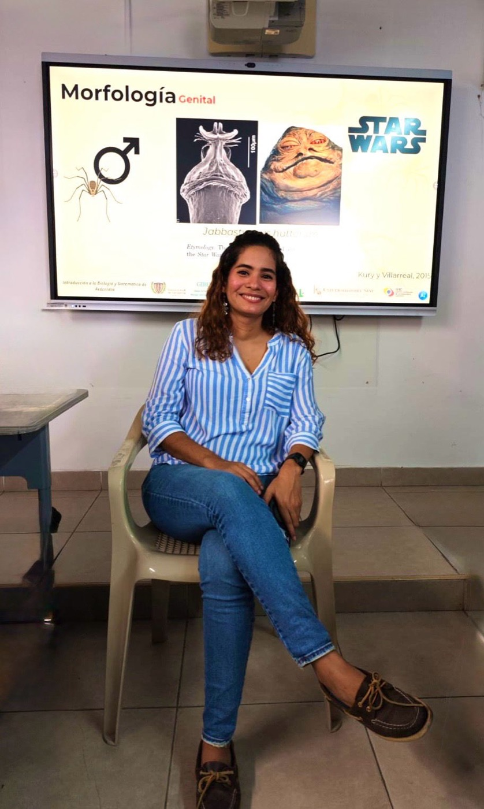
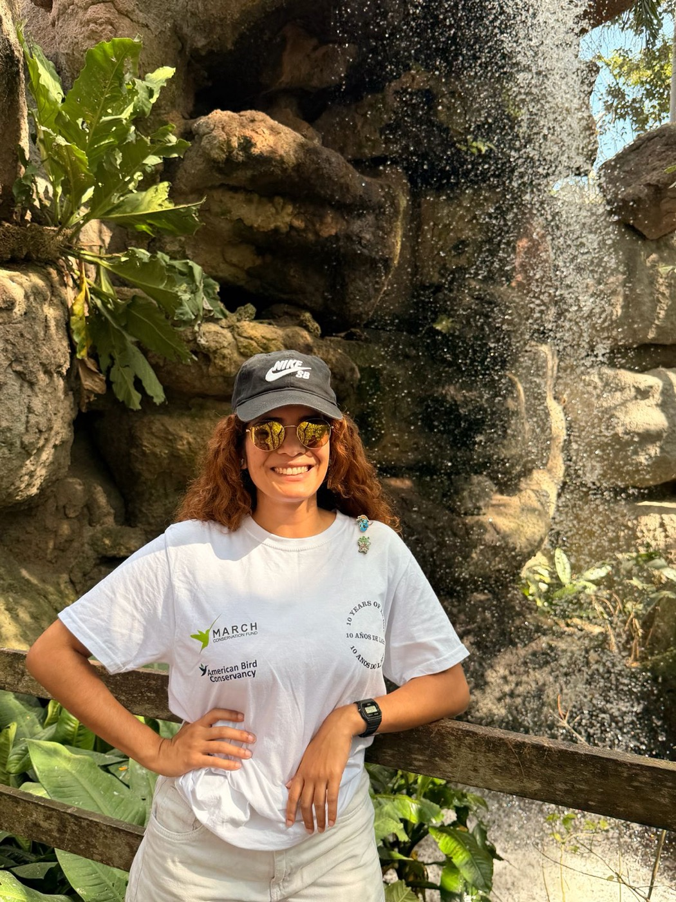
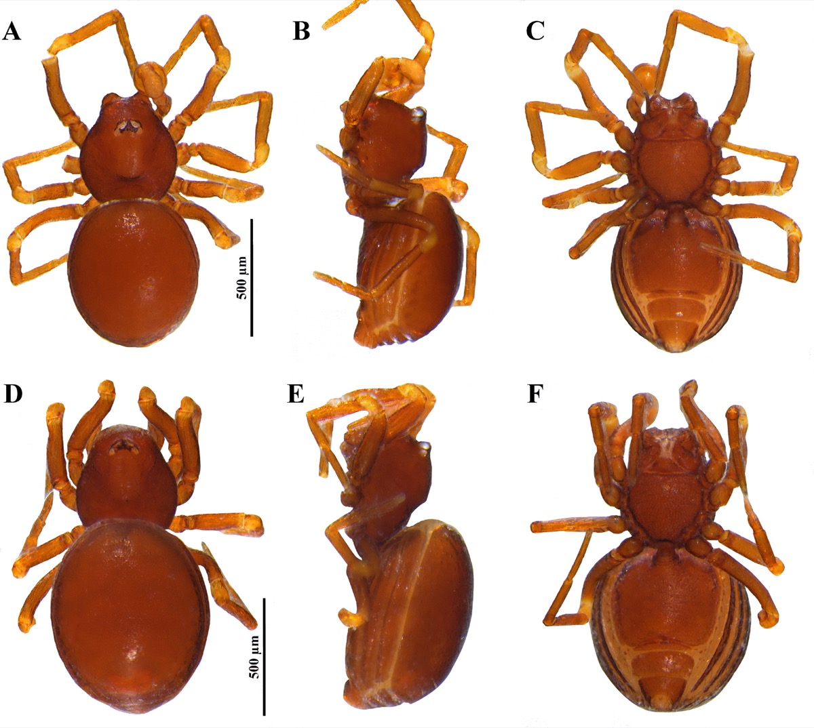
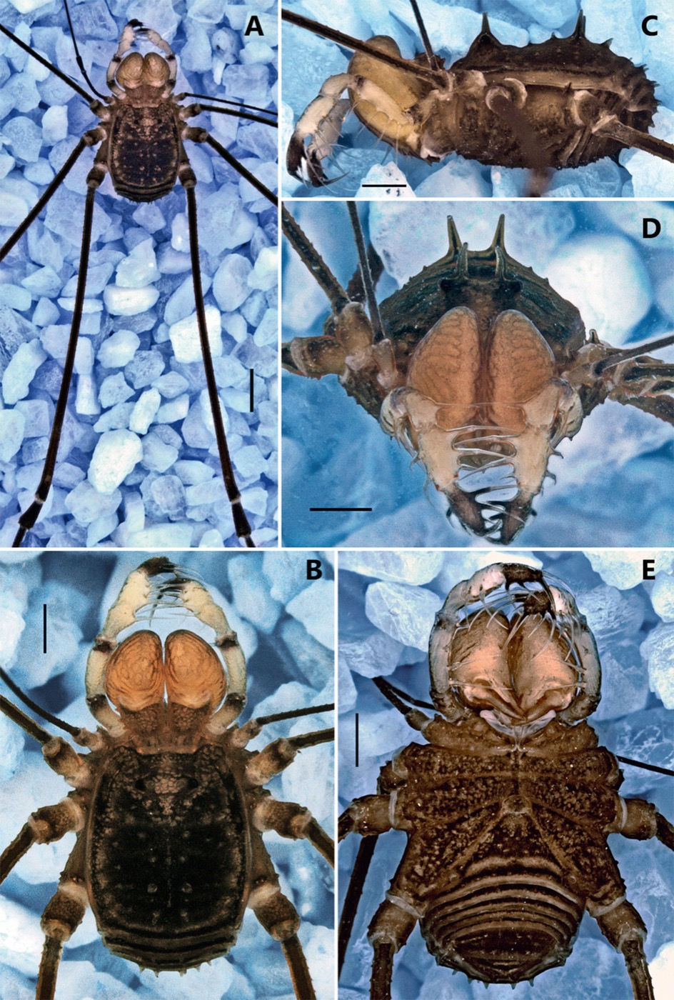
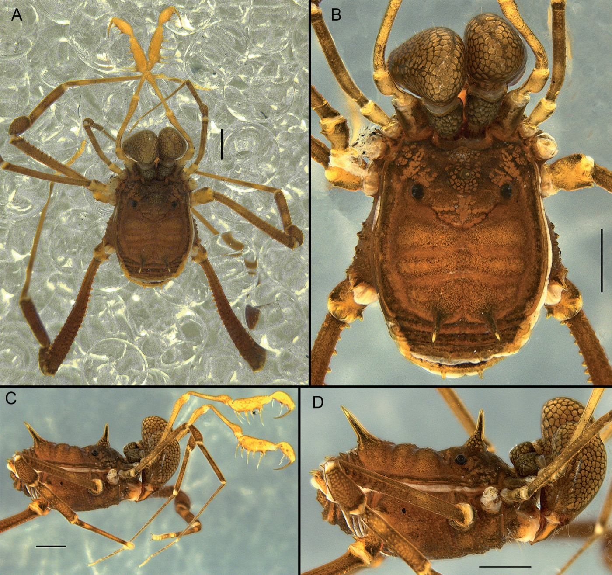

Specialization in Geographic Information Systems
Universidad de Manizales.




I’m a Colombian arachnologist and entomologist. My work has focused on arachnid taxonomy and the study of Neotropical species assemblages in the context of global change.
Education
Universidad de Manizales.
Universidad de Cartagena. Thesis: Temporal and spatial variation of taxonomic diversity and distribution patterns of Laniatores harvestmen (Arachnida) in tropical dry forest fragments of Bolívar, Colombia.
Universidad de Cartagena. Undergraduate thesis on the assemblage dynamics of diurnal Lepidoptera visiting Zinnia elegans in Arjona, Bolívar, Colombia.
Arachnids, especially Opiliones and related Neotropical lineages.
Insects and arachnids in tropical dry forest, agroecosystems, and fragmented landscapes.
Insects and arachnids studied through phylogeography, morphometrics, spatial analysis, and genomics.
Quintana-Canabal, A., Ahumada-C., D., Guevara-Rincón, L., García-Bayona, C., Núñez-López, L., Hernández-Martelo, J., Pérez, L. M., & Benítez, H. A. Exploring shape and size variation in Schizodon fasciatus across the Catatumbo River Basin, Colombia. Zoomorphology, 144(3), Article 59. doi.org/10.1007/s00435-025-00746-y
Núñez-López, L. Y., Ahumada-C., D., Guevara-Rincón, L., Quintana-Canabal, A., Guzmán-Soto, C., García-Bayona, C., Hernández-Martelo, J., & Benítez, H. Evaluación del stock fenotípico de Potamorhina laticeps in the Catatumbo River basin. Limnetica, 45(2). doi.org/10.23818/limn.45.15
Villarreal, O., Ahumada-C., D., & Flórez. The genus Stygnus in Colombia: a new species, geographic records and distributional updates from the Amazon basin. European Journal of Taxonomy, 970, 203-229. doi.org/10.5852/ejt.2024.970.2759
Villarreal, O., Ahumada-C., D., & Navas-S., G. Exploring the diversity of Eutimesius: new species and records from Colombia and Venezuela. Zoosystematics and Evolution, 100(3), 803-820. doi.org/10.3897/zse.100.120207
Villarreal, O., Ahumada-C., D., & Delgado-Santa, L. Mapping the distribution of armored harvestmen in Colombia. ZooKeys, 1175, 223-284. doi.org/10.3897/zookeys.1175.102485
Kury, A. B., García, A. F., & Ahumada-C., D. A new genus of Zalmoxoidea from Colombia. Journal of Arachnology, 51(1), 37-45. doi.org/10.1636/JoA-S-21-070
Hernández, J., Villalobos-Leiva, A., Bermúdez, A., Ahumada-C., D., Suazo, M., Correa, M., Díaz, A., & Benítez, H. Ecomorphology and morphological disparity of Caquetaia kraussii. Animals, 12, 3438. doi.org/10.3390/ani12233438
Ahumada-C., D., Borja-Arrieta, R., Carpio-Díaz, Y. M., Sandoval-B., A., Ríos, G., Jotty, K., & Gómez-Estrada, H. Butterflies of the Islas del Rosario archipelago. Boletín Científico Centro de Museos Museo de Historia Natural, 26(2), 179-193. doi.org/10.17151/bccm.2022.26.2.9
Ahumada-C., D., Medrano, M., & Segovia-Paccini, A. Redescription and geographic distribution of the type species of Eucynorta. Studies on Neotropical Fauna and Environment. doi.org/10.1080/01650521.2022.2076964
Hernández, J., Villalobos-Leiva, A., Bermúdez, A., Ahumada-C., D., Suazo, M., & Benítez, H. Interlocation sexual shape dimorphism in Caquetaia kraussii. Fishes, 7, 146. doi.org/10.3390/fishes7040146
García, A. F., & Ahumada-C., D. Taxonomic notes on Barinas: a new generic synonym, a new cave-dwelling species and new records from Colombia. Evolutionary Systematics, 6, 1-7. doi.org/10.3897/evolsyst.6.78123
Bermúdez-Tobón, A., Ramírez-Restrepo, J., Ahumada-C., D., Vides-Aviléz, H., & Navas-S., G. Estado previo del conocimiento de las especies silvestres del Distrito de Cartagena de Indias y su entorno ambiental. In Especies silvestres que nos acompañan en el Distrito de Cartagena de Indias, 19-49. ISBN: 978-958-5439-47-4.
Botero, J. P., Ahumada-C., D., & Navas, G. A new Colombian species of Phaea Newman, 1840 and new geographical records in Cerambycinae and Lamiinae (Coleoptera: Cerambycidae) from the Colombian Caribbean. The Coleopterists Bulletin, 75(2), 415-421. doi.org/10.1649/0010-065X-75.2.415
Ahumada-C., D., García, A. F., & Navas-S., G. R. The spiny agoristenid genus Barinas, with the description of a new species from the Colombian Caribbean. Arachnology, 18(6), 632-638. doi.org/10.13156/arac.2020.18.6.632
Ahumada-C., D., Segovia-Paccini, A., Ortega-Echeverría, C., Andrade-C., M. G., & Navas-S., G. R. Distribution extension of three common diurnal butterflies from the Colombian Caribbean. Intrópica, 15(1), 55-58. doi.org/10.21676/23897864.3422
Ahumada-C., D., Segovia-Paccini, A., & Navas-S., G. R. Butterflies of the Montes de María sub-region. Revista de la Academia Colombiana de Ciencias Exactas, Físicas y Naturales, 43(168), 521-530.
García, A. F., Martínez, L., & Ahumada-C., D. A new species of the armored spider genus Caraimatta from Colombia. Zootaxa, 4619(1), 168-176.
Ahumada-C., D., Segovia-Paccini, A., Zapata, W., Pérez, L., & González-Meza, H. Guía de Arácnidos del Jardín Botánico Guillermo Piñeres. Field Museum Field Guides.
Segovia-Paccini, A., Ahumada-C., D., & Moreno-González, J. A. A remarkable short-tailed whip-scorpion species of Piaroa from the Colombian Caribbean. Zootaxa, 4500(1), 91-103.
García, A. F., & Ahumada-C., D. Completing the puzzle: another species of Rhaucus from Colombia. Revista de la Academia Colombiana de Ciencias Exactas, Físicas y Naturales, 42(163), 200-206.
Taxonomy
Twelve described species and one described genus. Images correspond to figures from the original taxonomic articles or their public treatment pages.

Authors: Segovia-Paccini, Ahumada-C. & Moreno-González, 2018
Schizomida · Hubbardiidae · Zootaxa

Authors: García, Martínez & Ahumada-C., 2019
Araneae · Tetrablemmidae · Zootaxa

Authors: Ahumada-C., García & Navas-S., 2020
Opiliones · Agoristenidae · Arachnology
Authors: García & Ahumada-C., 2022
Opiliones · Agoristenidae · Evolutionary Systematics

Authors: Kury, García & Ahumada-C., 2023
Opiliones · Zalmoxoidea · Journal of Arachnology

Authors: Villarreal, Ahumada-C. & Flórez, 2024
Opiliones · Stygnidae · European Journal of Taxonomy
Authors: Villarreal, Ahumada-C. & Delgado-Santa, 2023
Opiliones · Laniatores · ZooKeys
Authors: Villarreal, Ahumada-C. & Delgado-Santa, 2023
Opiliones · Laniatores · ZooKeys
Authors: Villarreal, Ahumada-C. & Delgado-Santa, 2023
Opiliones · Laniatores · ZooKeys
Authors: Villarreal, Ahumada-C. & Navas-S., 2024
Opiliones · Stygnidae · Zoosystematics and Evolution
Authors: Villarreal, Ahumada-C. & Navas-S., 2024
Opiliones · Stygnidae · Zoosystematics and Evolution
Authors: Villarreal, Ahumada-C. & Navas-S., 2024
Opiliones · Stygnidae · Zoosystematics and Evolution

Authors: Kury, García & Ahumada-C., 2023
Opiliones · Zalmoxoidea · Journal of Arachnology
Speaker activity
Recognition
2025. National Entomology Award “Hernán Alcaraz Viecco”.
2025. Innovative Teaching Award, Marine Biology Program, Universidad del Sinú.
2024. Meritorious master's thesis, Universidad de Cartagena.
2020. First place for Best Poster in Systematics/Biogeography, VI Latin American Arachnology Congress.
2020. Research visit fellowship, Universidade Federal do Rio de Janeiro.
2020. First place, National Day of Equality and Environment Award, Fundación Equidad Seguros.
2020. Laureate undergraduate thesis, Universidad de Cartagena.
2015. Research visit fellowship, Smithsonian Institution National Museum of Natural History.
2014. Second place for best presentation, Universidad de Cartagena Scientific Convention.
Research groups
Scientific associations
Online profiles & media
Author profile focused on Opiliones taxonomic literature, including a biography and curated works on harvestmen.
Laboratory profile as a PhD student in Conservation Medicine at Universidad Andrés Bello.
Research profile with publications, reads, citations, and areas of expertise.
Listed among arachnologists and lepidopterists in the biodiversity taxonomy community.
Contact
For collaborations, academic inquiries, or biodiversity research projects, please write to:
opiliodan@outlook.com